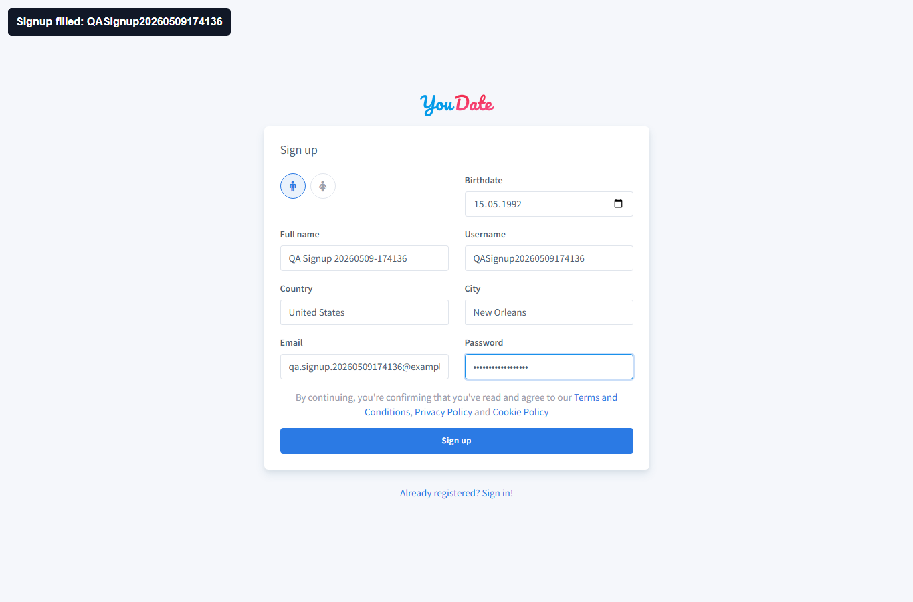
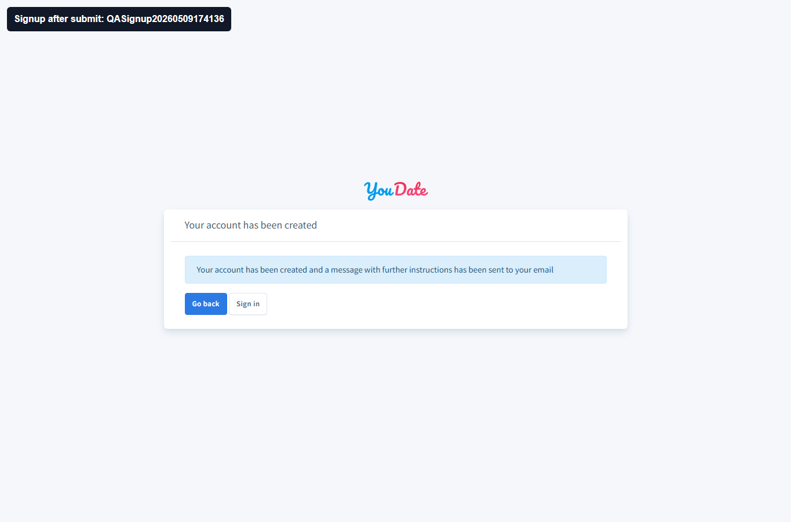
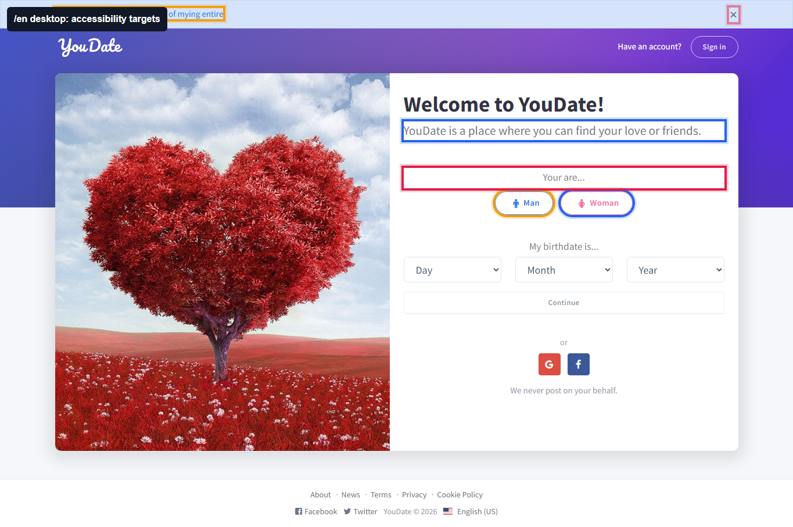
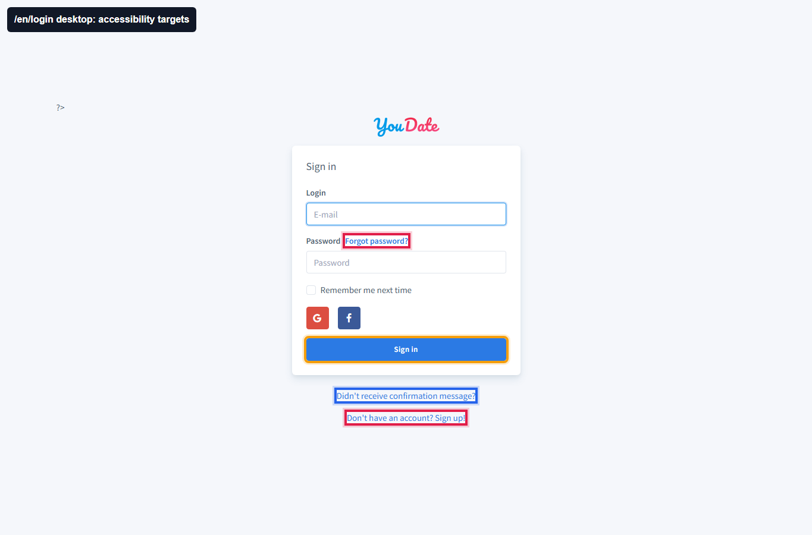

PASS
Signup: форма заполнена
Проверка: валидные данные реально попали в форму. Результат: Country/City видны на экране и в raw DOM evidence.
Raw signup JSON
Confideline QA/BA · 2026-05-09
Новый проход по публичным страницам `/en`, `/en/login`, `/en/signup`: отдельно проверены техническая доступность интерфейса и happy path регистрации нового пользователя.
Есть подтвержденные accessibility-дефекты.
Новый пользователь создан через `/en/signup`.
Проблемы повторяются на desktop/mobile.
Selectize Country/City теперь заполняются корректно.
Регистрация работает: форма `/en/signup` открылась, Country/City реально выставлены как `United States / New Orleans`, после submit сайт показал “Your account has been created”. Это PASS.
Что чинить: на публичных страницах есть accessibility FAIL: кнопка закрытия news alert без имени, radio/select без корректных label/name, слабый контраст ссылок/текста, viewport ограничивает zoom, ссылки в текстовом блоке отличаются только цветом.
Где искать: Yii2 PHP views публичной главной, login/signup views, AssetBundle/CSS для цветов и Bootstrap/selectize markup. Проверять после фикса повторным axe-прогоном и визуально на desktop/mobile.
| Статус | Проверка | Что тестировал | Что получил | Действие для Игоря |
|---|---|---|---|---|
| PASS | Signup happy path | Создание нового пользователя через `/en/signup` с валидными данными. | Появилось сообщение “Your account has been created”; validation errors нет. | Регистрация как базовый публичный flow сейчас не блокирует пользователя. |
| FAIL | Home accessibility | `/en` desktop/mobile через axe WCAG 2A/2AA. | Критичный `button-name`, серьезный `color-contrast`, `select-name`, `meta-viewport`. | Добавить accessible name кнопке закрытия alert, labels/names для dob selects, поднять контраст, убрать запрет zoom. |
| FAIL | Login accessibility | `/en/login` desktop/mobile. | Слабый контраст ссылок/кнопки и viewport zoom issue. | Проверить CSS цветов login form и meta viewport. |
| FAIL | Signup accessibility | `/en/signup` desktop/mobile. | Sex radio inputs без label, terms/privacy/cookie links отличаются только цветом, слабый контраст. | Связать label с radio, добавить нецветовое отличие ссылок, поднять контраст terms текста. |
Проверка: валидные данные реально попали в форму. Результат: Country/City видны на экране и в raw DOM evidence.
Raw signup JSON
Проверка: submit формы. Результат: сервер показал сообщение об успешном создании аккаунта, форма не осталась с validation errors.
Raw signup MD
Проверка: публичная главная. Результат: кнопка закрытия alert без доступного имени, плюс контраст и select-name проблемы.
Raw axe JSON
Проверка: login desktop/mobile. Результат: слабый контраст у ссылок/кнопок, это влияет на читаемость формы.
Raw axe MD
Проверка: signup desktop/mobile. Результат: radio labels и links-in-text-block не соответствуют accessibility требованиям.
Raw axe JSON